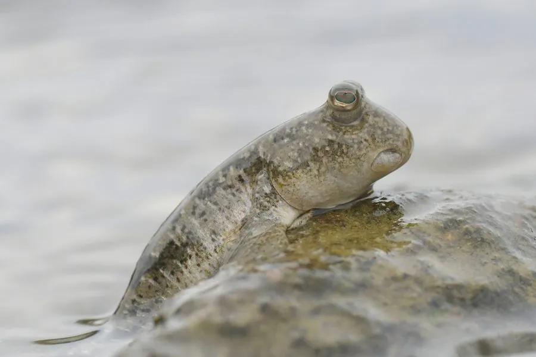

鱼类 · 动物界
弹涂鱼 Periophthalmus modestus

生活在潮间带泥滩上的小型鱼，能用胸鳍在泥地上爬行和跳跃，靠皮肤和口腔黏膜呼吸空气，是红树林滩涂的常见居民。
- 分类
- 门脊索动物门纲硬骨鱼纲目鲈形目科虾虎鱼科属弹涂鱼属
- 栖息环境
- 潮间带泥滩、红树林和河口，退潮时在泥地上活动
- 地理分布
- 东亚和东南亚沿海，包括中国沿海、日本和朝鲜半岛
- 保护级别
- 暂无评估；中国未列入国家重点保护野生动物名录
物种志
弹涂鱼体呈长形，头部钝圆，两只眼睛突出于头顶，可以灵活转动观察四周。胸鳍发达，基部有肌肉，能像手臂一样支撑身体；体色灰褐或黄褐，体侧带黑色斑点。成鱼体长一般 8–15 cm。
弹涂鱼分布于东亚和东南亚的潮间带泥滩、红树林和河口，包括中国沿海、日本和朝鲜半岛。它过着半陆生生活：退潮时在泥滩上活动，用胸鳍“行走”和跳跃，靠皮肤和口腔黏膜呼吸空气，也能在水中呼吸。它是杂食性鱼类，吃藻类、小型甲壳类、昆虫和有机碎屑。繁殖期在春夏季，雄鱼在泥滩上挖洞筑巢，还会跳起来吸引雌鱼。弹涂鱼是红树林生态系统的指示物种，对滩涂环境的变化十分敏感，也是沿海居民喜爱的食物。目前它没有IUCN 的正式评估，中国未将其列入国家重点保护野生动物名录。
形态与习性
- 食性杂食性，吃藻类、小型甲壳类、昆虫和有机碎屑
- 体长一般 8–15 cm
- 呼吸靠皮肤和口腔黏膜呼吸空气，可在陆上停留较长时间
- 运动用胸鳍在泥滩上“行走”和跳跃，能爬上红树根
- 繁殖春夏季在泥滩挖洞筑巢，雄鱼跳跃吸引雌鱼
- 栖息地潮间带泥滩、红树林和河口
趣味知识
- 弹涂鱼能用胸鳍在泥滩上“走路”和跳跃，还会爬上红树根。
- 它靠皮肤和口腔黏膜呼吸空气，所以能长时间离开水。
- 雄鱼在泥滩上挖洞筑巢，还会跳起来吸引雌鱼。